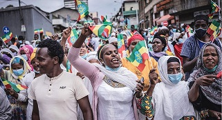

Ever since the rule of the military junta that ended in 1987, Ethiopia has neglected developing its private sector. This has resulted in reduced cash flow to the 22 million Ethiopians living below the poverty line, which has led to flatlining the development of the country
Our mission for “Enrich Ethiopia” is to encourage entrepreneurship, minimize wealth inequality, stimulate the national economy, educate, modernize, foster mentorship, and build bridges to not only develop the private sector, but also to empower individuals by providing access to opportunities, information, and capital. Through sustainability, innovation, and community outreach we strive to revolutionize business, entrepreneurship, and economics in Ethiopia.
1. Ethiopia has a robust economy that is one of the fastest growing economies in the world, however its private sector is disproportionately underdeveloped.
2. There is immense wealth disparity and 1 in 4 people live on less than $2 a day and the majority of the workforce has little opportunity to accumulate wealth.
3. Ethiopia is looking to modernize, and efforts to introduce mobile banking have begun, but they have been largely unsuccessful.
4. The Ethiopian government is invested in developing its private sector and has created initiatives to do so, and the economic climate shows great potential for growth. The newly privatised Ethio Telecom company also creates a greater opportunity for more reliable internet connectivity in the country.